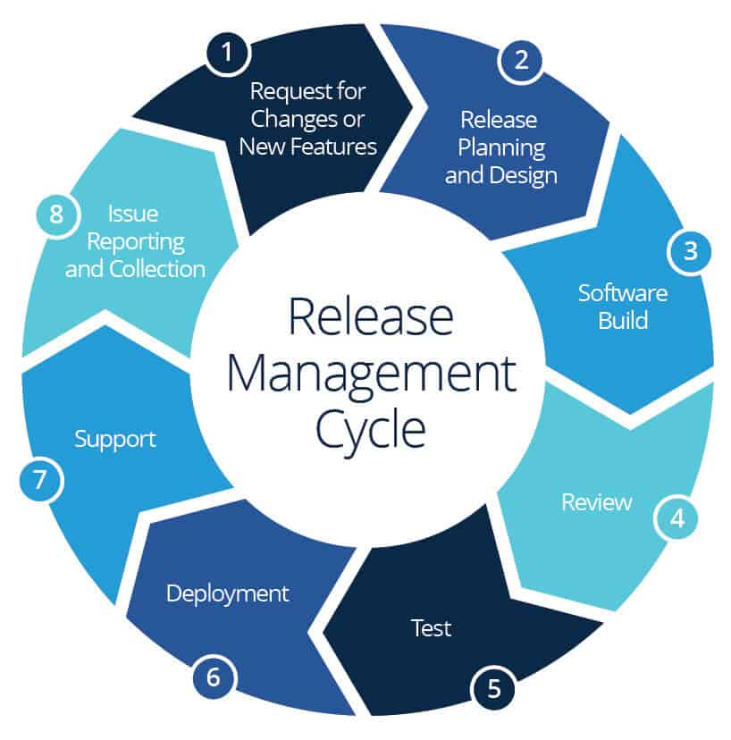

Version-controlled, audit-friendly operating procedures for release management, escalation, and production support.
Standard Operating Procedures (SOPs) ensure that all operational processes are repeatable, consistent, and auditable. These documents guide DevOps engineers, release managers, and support teams on how to execute tasks safely and efficiently.
By following SOPs, teams reduce errors, accelerate deployment cycles, and maintain regulatory and quality compliance. This educational reference page illustrates the types of SOPs used in real-world DevOps environments.
Follow structured steps to maintain operational consistency.

"This workflow diagram shows the SOP process from accessing the local repository to updating documents, ensuring audit compliance.".
Release management is the process of identifying, planning, building, reviewing, testing, deploying, supporting, and collecting feedback for new software releases or updates. Releases ensure that products are delivered safely and consistently to end-users while minimizing downtime and failures.
Well-defined release processes improve quality, reduce risk, and help teams track metrics that influence operational stability. They are a crucial part of a mature DevOps framework.
Downloadable SOP documents for various operational areas.